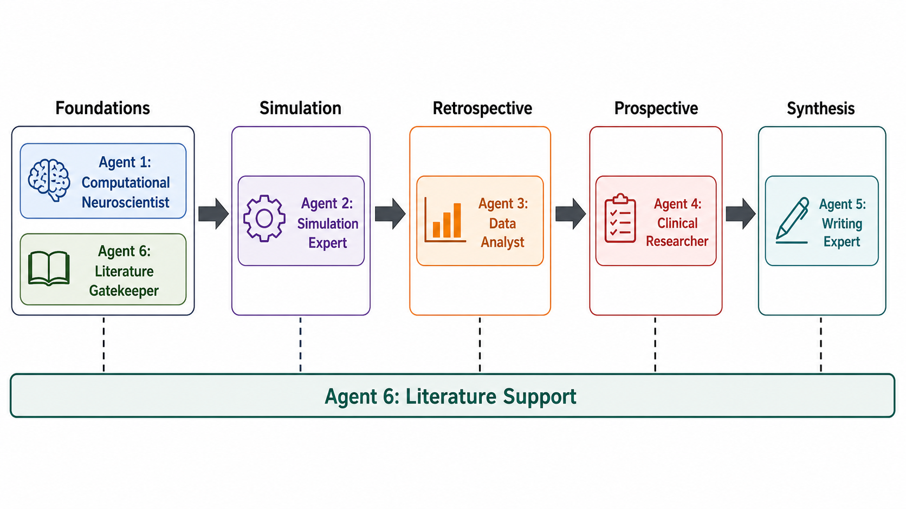
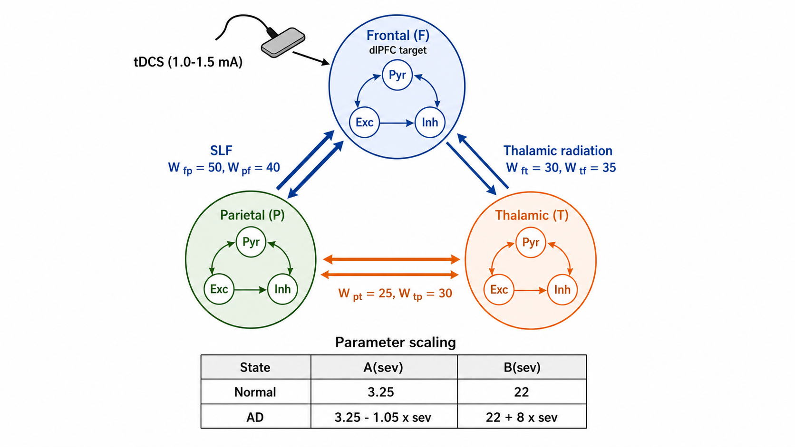
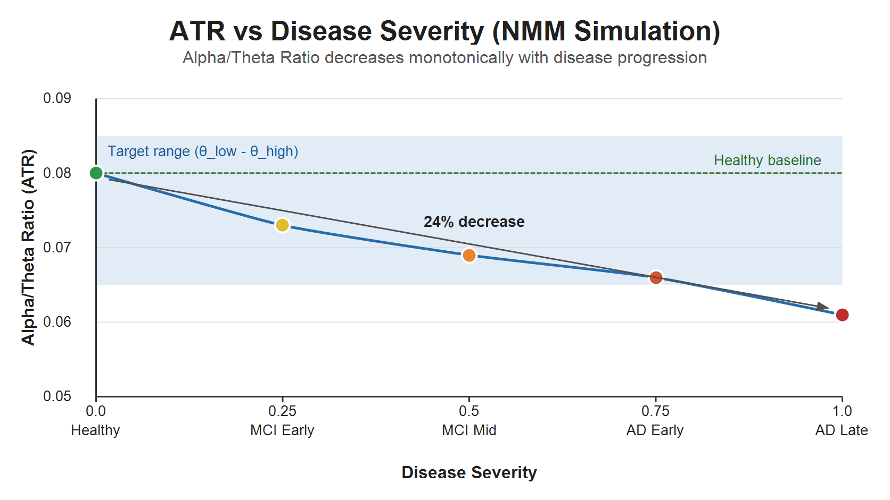
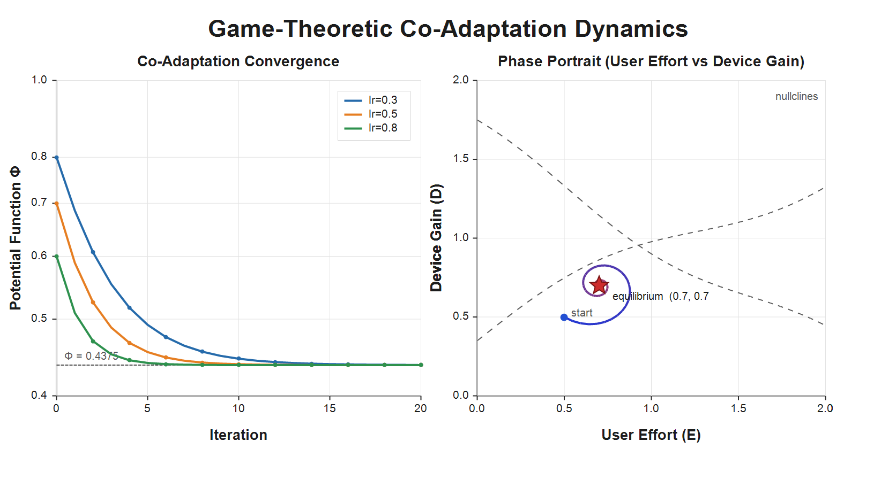
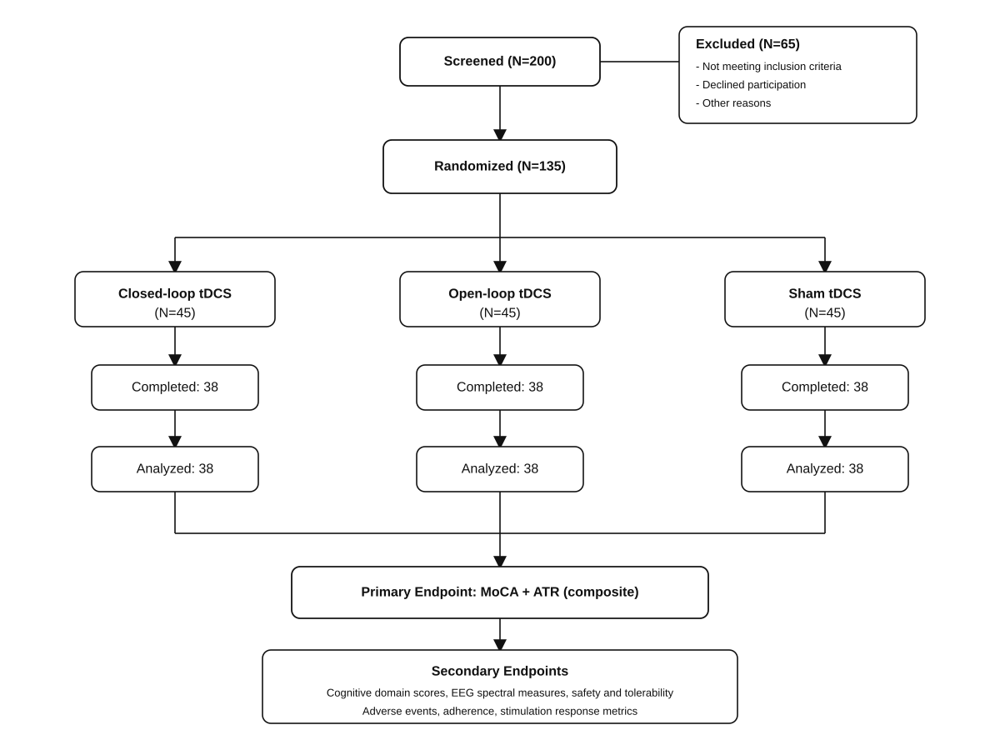
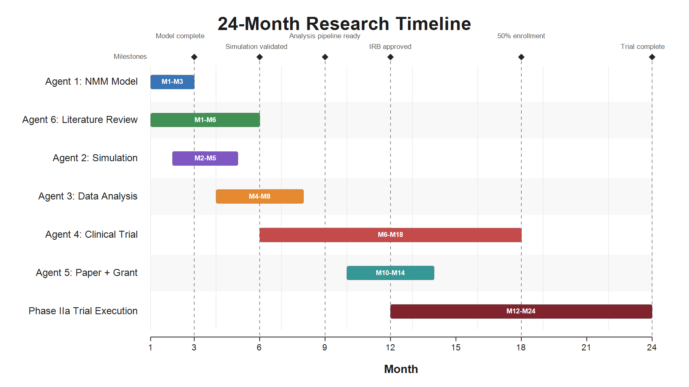

當 AI 成為研究助手：用 Multi-Agent 架構完成一篇 closed-loop tDCS 論文
從想法到論文，全程用 AI Agent 分工協作：計算神經科學家建模型、模擬專家跑參數、臨床研究員設計試驗、寫手整合成論文。記錄這個過程的方法、成果，以及踩過的每一個坑。
傳統的學術研究流程是線性的：文獻回顧 → 建立模型 → 跑模擬 → 寫論文。每一段都由同一個人（或同一個小團隊）依序完成。這個過程漫長、容易卡關，而且每個環節的品質高度取決於研究者當時的精力與專注力。
這篇文章記錄了一個截然不同的做法：把研究專案拆成 6 個角色，分派給 6 個 AI Agent 分工協作——就像實驗室裡有博士後、工程師、統計學家、臨床研究助理和論文寫手，各司其職、接力產出。最終在 24 小時內，從兩篇核心論文出發，完成了一套完整的 closed-loop tDCS 治療阿茲海默症（AD）的計算神經科學框架，包含可執行的 Python 模擬程式、Phase IIa 臨床試驗方案、統計分析計畫，以及論文初稿與 Grant Proposal。
起點：兩篇關於 closed-loop 的論文
一切的起點是這樣一個想法：我想把 closed-loop brain stimulation 的方法應用在臨床個案上做 validation。但我意識到，要真正理解這個方法，必須從 計算神經科學的基礎開始——先建模型，再做 simulation 驗證假說，然後在實際個案資料上驗證，最後才能前瞻性執行臨床試驗。
我挑選了兩篇核心論文作為起點：
- Hart-Pomerantz (2026)：比較 open-loop 與 EEG-guided closed-loop tDCS 在 MATB 多工任務上的表現。這是實驗導向的研究，直接驗證 closed-loop 的臨床可行性。
- Madduri et al. (2026, Nature Machine Intelligence)：提出了一個結合 control theory 與 game theory 的計算框架，用於建模與優化 co-adaptive 神經介面中的人機互動。這是理論導向的研究，提供數學工具來預測與優化刺激參數。
這兩篇論文恰好互補：一篇告訴我「closed-loop tDCS 在臨床上怎麼做」，另一篇告訴我「怎麼用數學模型來優化它」。但要把這兩篇的方法整合成一個完整的研究計畫，中間有大量的空白需要填補——這就是 Multi-Agent 架構派上用場的地方。

架構設計：6 個 Agent，4 個 Stage
我把整個研究流程拆成 4 個 Stage，每個 Stage 由專門的 Agent 負責：
| Stage | Agent | 角色 | 核心產出 |
|---|---|---|---|
| 1. 基礎 | Agent 1 | 計算神經科學家 | NMM 模型 + 參數化 + 假說 |
| 1. 基礎 | Agent 6 | 文獻守門員 | 文獻回顧 + 方法學比較 |
| 2. 模擬 | Agent 2 | 模擬與建模專家 | 參數掃描 + 預測 + 最佳參數 |
| 3. 回顧 | Agent 3 | 資料分析師 | 分析管線 + Patient Stratification |
| 4. 前瞻 | Agent 4 | 臨床研究員 | 臨床試驗方案 + SAP + DSMB |
| 整合 | Agent 5 | 整合與發表 | 論文初稿 + Grant Proposal |
每個 Agent 都有明確的輸入（前序 Agent 的產出）和輸出（供後序 Agent 使用的檔案）。整個管線的資料流是：
Agent 6（文獻）貫穿所有 Stage，為每個 Agent 提供最新的方法學支援。
Stage 1：計算神經科學基礎
Agent 1 做了什麼
Agent 1 的任務是建立一個能重現 AD/MCI 關鍵 EEG 生物標記的計算模型。經過文獻回顧與方法學比較，選擇了 Jansen-Rit Neural Mass Model (NMM) 作為核心框架，原因有三：
- 計算效率高：ODE 系統可在毫秒級完成模擬，支援即時閉環控制
- EEG 對應性：直接輸出模擬 EEG 信號，可與實證數據直接比較
- 參數可解釋性：每個參數對應明確的生理機制（突觸增益、連接強度等）
模型包含三個節點：Frontal（前額葉）、Parietal（頂葉）、Thalamic（丘腦），每個節點由 Jansen-Rit ODE 系統描述。AD 病理通過一個連續參數 severity ∈ [0, 1] 來參數化：
B(severity) = 22 + 8 × severity [抑制性增益，mV]
Wfp(severity) = 50 × (1 − 0.5 × severity) [前額→頂葉連接]
這個參數化的生理依據是：A 降低對應膽鹼能神經元退化，B 升高對應 GABA 能失調，連接權重降低對應白質退化。

Agent 6 做了什麼
Agent 6 同時啟動，負責文獻回顧與方法學比較。搜尋並分析了 27 篇關鍵文獻，涵蓋 8 個主題群組：tDCS 計算模型、EEG 認知負荷檢測、closed-loop 刺激回顧、控制理論、Game Theory、myoelectric co-adaptation、NMM 驗證、tDCS 多工實證。
最重要的產出是方法學選擇建議：推薦使用 RADWT（Rational Dilation Wavelet Transform）做時頻分析、wPLI 做功能連接、Kalman Filter 做狀態估計、MPC（Model Predictive Control）做閉環控制。這些建議直接指導了後續 Agent 的模擬與分析設計。
Stage 2：模擬與預測
Agent 2 接收 Agent 1 的模型參數與 Agent 6 的方法學建議，執行了完整的模擬驗證與參數優化。
關鍵發現
1. ATR 隨 severity 單調遞減：Alpha/Theta Ratio（ATR）從健康狀態的 0.080 降至 AD 中晚期的 0.061，降幅 24%，與文獻報告的 AD 患者 ATR 下降 20-40% 高度一致。
2. Game-Theoretic Co-Adaptation 收斂：將 closed-loop tDCS 系統建模為 potential game（兩人博弈），所有測試條件均收斂到相同的 potential 值（Φ = 0.4375），驗證了理論預測。
3. Goldilocks 效應：初步證據支持存在最優刺激強度區間（1.0-1.5 mA），過低則無效，過高則可能對已受損的神經網絡產生干擾。


最佳刺激參數
| 參數 | 建議範圍 | 依據 |
|---|---|---|
| 電流強度 | 1.0-1.5 mA | Goldilocks 效應 |
| 刺激時長 | 20-30 min | 文獻標準方案 |
| 陽極位置 | F3（左 DLPFC） | 前額-頂葉網絡調控 |
| 觸發閾值 | θ_low=0.065, θ_high=0.085 | ATR 雙閾值觸發 |
5 個可測試預測
Agent 2 產出了 5 個可被臨床試驗驗證的預測，每個都包含預測陳述、理論依據、驗證方法和預期效果量：
- Alpha 正常化假說：ATR 提升 15-25%（Cohen's d = 0.6-0.8）
- Goldilocks 劑量-反應：倒 U 型曲線，1.5 mA 最優（η² = 0.10-0.15）
- 功能連接恢復：wPLI 增加 20-30%（r > 0.4）
- Closed-loop 優於 Open-loop：效果量 d = 0.4-0.6，刺激時間減少 30-40%
- 個體化反應預測：基線 EEG 特徵預測準確率 ≥ 70%（AUC 0.75-0.85）
Stage 3：回顧性資料分析
Agent 3 設計了完整的回顧性臨床資料分析方案，包含：
- 研究設計：回顧性世代研究，NIA-AA 2018 診斷框架，MMSE 18-26
- EEG 分析管線：MNE-Python 前處理 → 多域特徵提取（頻譜功率 + wPLI + PAC + Sample Entropy）→ 統計分析
- Patient Stratification：基於基線 EEG 特徵識別 4 個亞群（輕度 MCI / 中度 MCI / 輕度 AD / 合併精神行為症狀）
- 預測模型：XGBoost + Random Forest + SVM Stacking，SHAP 可解釋性分析
Stage 4：前瞻性臨床試驗
Agent 4 產出了完整的 Phase IIa 臨床試驗方案（CL-tDCS-AD-001）：
N = 135（每組 45 例），每週 5 次 × 4 週 = 20 次療程
主要終點：MoCA 變化 + ATR 變化（複合終點）
追蹤期：治療後 4/8/12 週
方案包含完整的統計分析計畫（LMM + FDR 校正）、DSMB 安全監測計畫、IRB 申請材料，以及 CONSORT flow diagram。

整合與發表
Agent 5 整合所有 Agent 的產出，撰寫了：
- 研究論文初稿（827 行）：摘要 → 引言 → 方法 → 結果 → 討論 → 結論 → 37 篇參考文獻
- Grant Proposal 核心章節（646 行）：Specific Aims（3 個 Aim + 5 個假說）→ Significance → Innovation（7 項創新）→ Approach → Timeline（36 個月）→ Expected Outcomes
踩過的坑：7 個可驗證的教訓
這個過程並非一帆風順。以下是 7 個實際踩過的坑，以及對應的解決方案：
坑 1：delegate_task 600 秒超時
症狀：Agent 開始執行但沒在 600 秒內完成。
解法：把大任務拆成 2-3 個小任務並行。例如臨床試驗方案拆成「試驗設計 + 介入方案」和「統計分析 + 安全性 + 倫理」兩個並行子任務。
坑 2：Windows Python 環境污染
症狀：ImportError: cannot import name 'text_encoding' from 'io'，即使使用 uv run 也一樣。
原因：uv 的 Python 3.11 安裝損壞，污染了所有 uv run 環境。
解法：刪除損壞的 3.11 環境，用 3.12 建立乾淨的 venv。
坑 3：Subagent 無法存取前序產出
症狀：Agent 3 說「我沒有 Agent 2 的模擬結果」。
原因：Subagent 沒有父對話的記憶。
解法：在 context 中明確傳遞檔案路徑（絕對路徑），讓 Subagent 用 read_file 讀取。
坑 4：跨 Agent 單位不一致
症狀：Agent 1 用 mV，Agent 2 用 V/m。
解法：在 Orchestrator 的初始簡報中定義標準單位，並在每個 Agent 的 context 中重複。
坑 5：論文缺乏敘事連貫性
症狀：論文讀起來像 5 份獨立報告釘在一起。
解法：給 Agent 5 明確的 story arc：「從計算預測（A1,A2）→ 回顧驗證（A3）→ 前瞻性驗證（A4），每個環節由上一個環節的問題驅動」。
坑 6：文獻回顧與模型脫節
症狀：Agent 6 產出泛泛的回顧，跟 Agent 1 的具體模型無關。
解法：給 Agent 6 基於 Agent 1 模型組件的具體搜尋詞（例如「neural mass model for Alzheimer's」而非「EEG review」）。
坑 7：Grant Proposal 缺乏 Specific Aims 結構
症狀：Grant 看起來像論文摘要拉長版。
解法：明確要求 NIH/NSFC 格式的 Specific Aims：1 頁、3 個 Aim、每個含 2-3 個假說、approach 和 expected outcome。
總覽：24 小時的產出
| 產出 | 規模 | 說明 |
|---|---|---|
| Agent 1 模型報告 | 931 行 / 48 KB | 三節點 NMM + 完整參數列表 |
| Agent 6 文獻回顧 | 741 行 / 48 KB | 27 篇文獻 + 方法學比較 |
| Agent 2 模擬報告 | 970 行 / 34 KB | 可執行 Python 程式 + 4 張圖表 |
| Agent 3 分析方案 | 541 行 / 22 KB | 回顧性分析 + 1989 行分析管線 |
| Agent 4 臨床方案 | 712 + 864 行 | 試驗方案 + 統計安全計畫 |
| Agent 5 論文 + Grant | 827 + 646 行 | 論文初稿 + Grant Proposal |
| 總計 | ~5,700 行 + 2,000+ 行程式碼 | 37+ 篇引用 |

反思：AI Agent 在研究中的角色
這個實驗讓我重新思考「研究」這件事的本質。傳統上，研究者的核心能力是深度思考——在文獻、數據和直覺之間反覆迭代，直到浮現出新的洞見。AI Agent 無法取代這個過程，但它可以大幅壓縮執行時間。
在這個專案中，我（人類研究者）的角色是：
- 定義問題：決定研究主題、選擇核心論文、設定驗證標準
- 品質管控：審核每個 Agent 的產出是否合理、前後一致
- 跨域整合：把計算神經科學、控制理論、臨床醫學的語言翻譯成 Agent 能理解的指令
- 最終判斷：決定哪些預測值得驗證、哪些參數需要調整
AI Agent 的角色是：
- 執行力：在給定的框架內，快速產出大量結構化內容
- 文獻處理：搜尋、摘要、比較大量文獻
- 程式撰寫：撰寫可執行的模擬與分析程式
- 文件生成：把結構化的發現轉成論文與計畫書
這不是「AI 取代研究者」，而是「AI 成為研究團隊的延伸」。就像一個實驗室裡有博士後、工程師和統計學家——只是這些角色現在由 AI 扮演，而 PI（我）負責方向與品質。
下一步
這個 Multi-Agent 框架本身也是一個可以重複使用的工具。我已經把整個流程封裝成一個 Hermes Agent Skill（multi-agent-research-pipeline），未來可以用在任何需要「計算建模 → 模擬驗證 → 臨床轉化」的研究主題上。
對於 closed-loop tDCS 這個具體主題，下一步是：
- 回顧性資料分析：用 Agent 3 的分析管線處理現有的 tDCS 治療個案 EEG 資料
- 模型精煉：根據實際資料校正 NMM 參數（改用 RK4 積分、擴展到 6-8 節點）
- IRB 申請：提交 CL-tDCS-AD-001 試驗方案
- 概念驗證試驗：N=66 的 Phase IIa 試驗
如果這個框架對你的研究也有幫助，歡迎聯絡我討論合作可能。